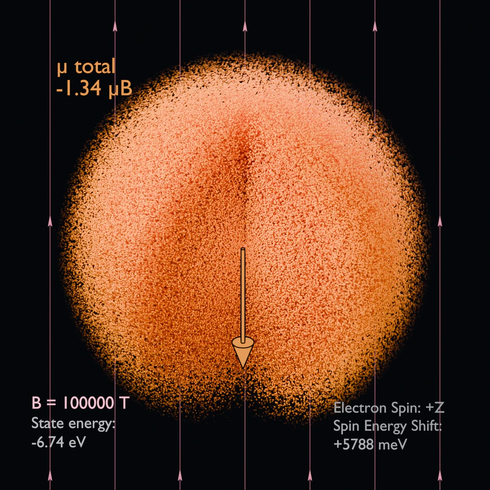
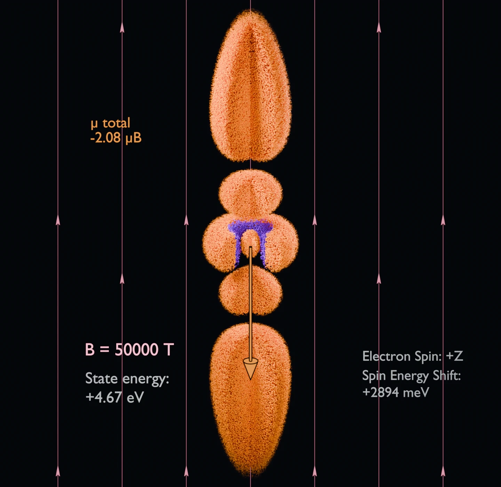
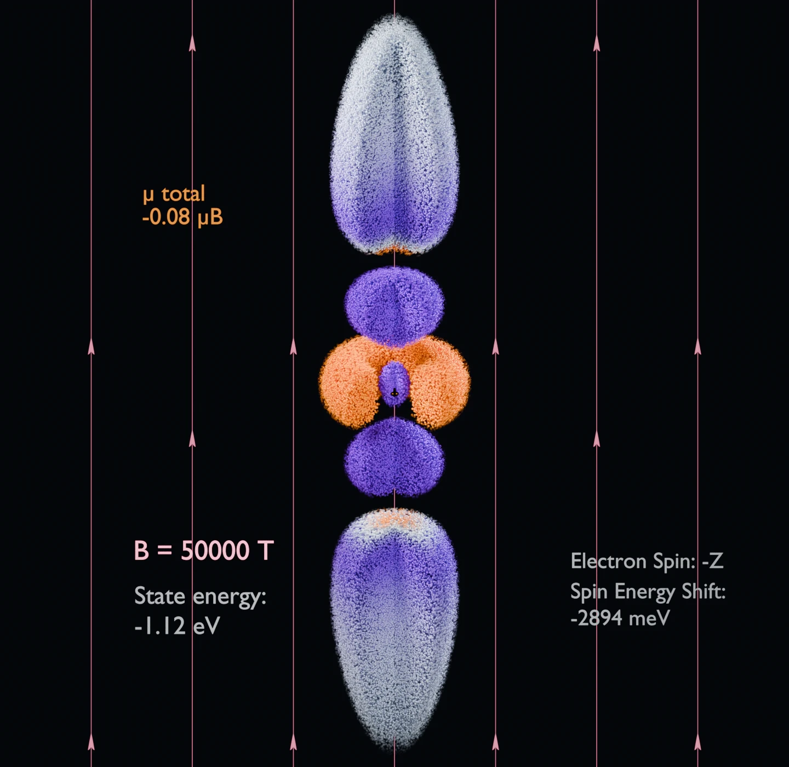
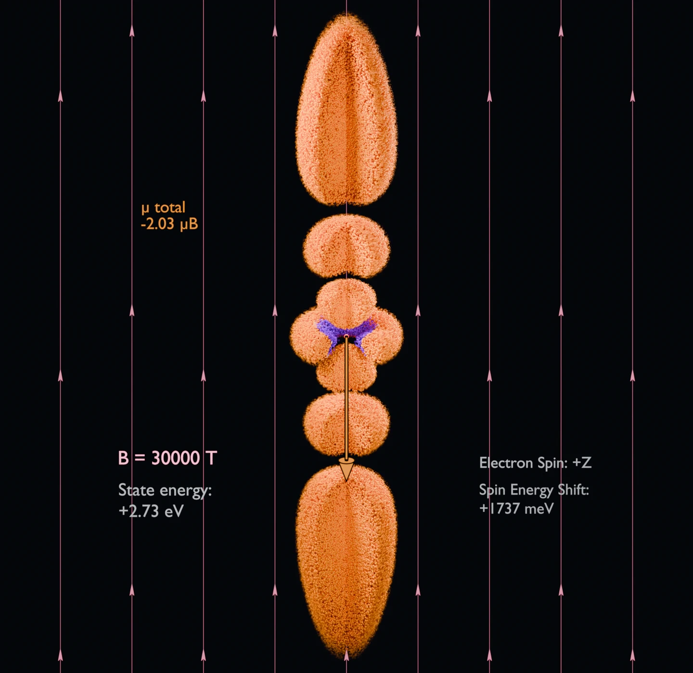
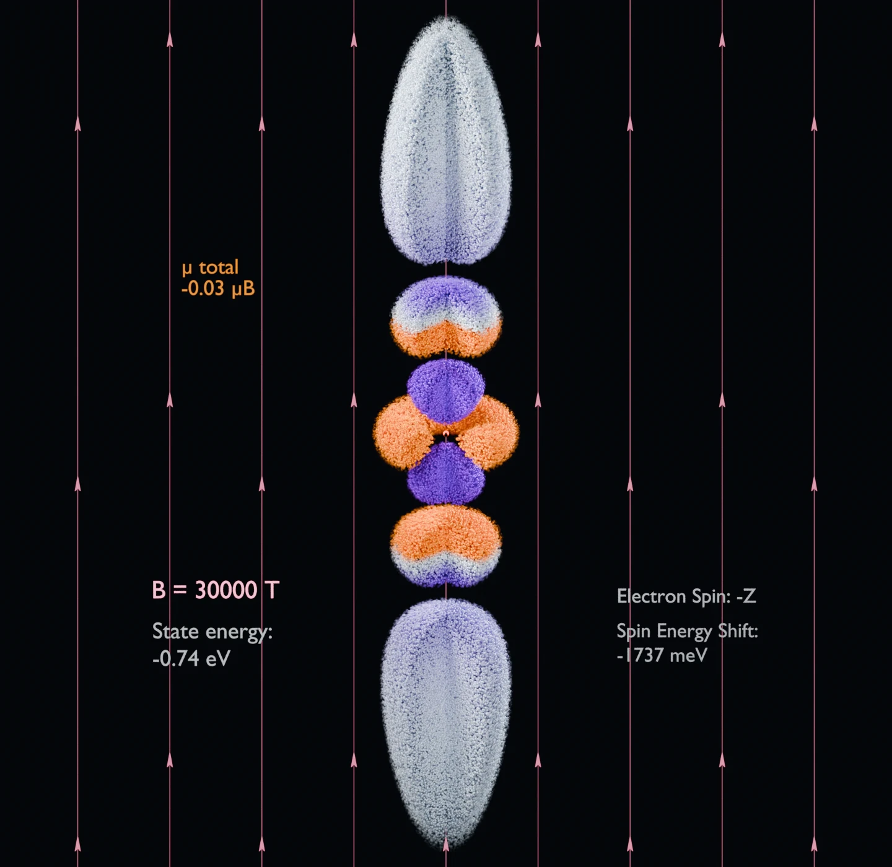
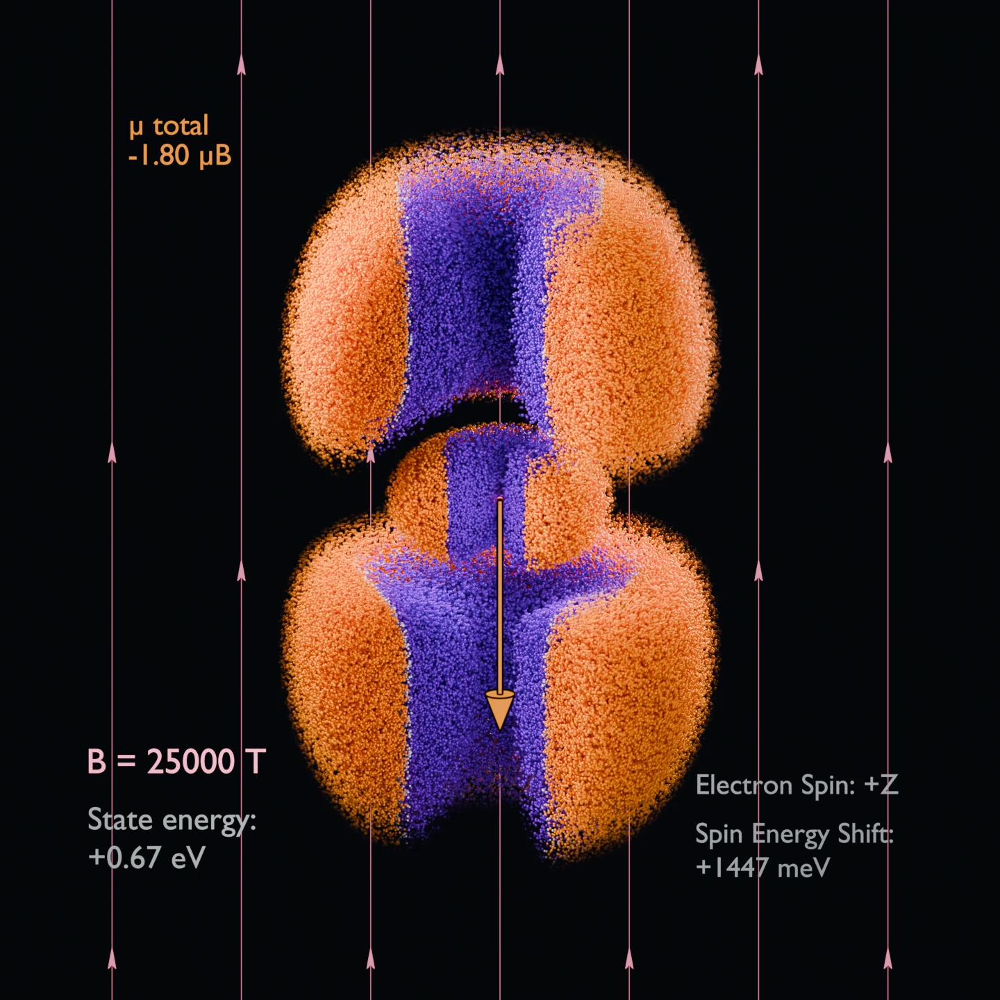
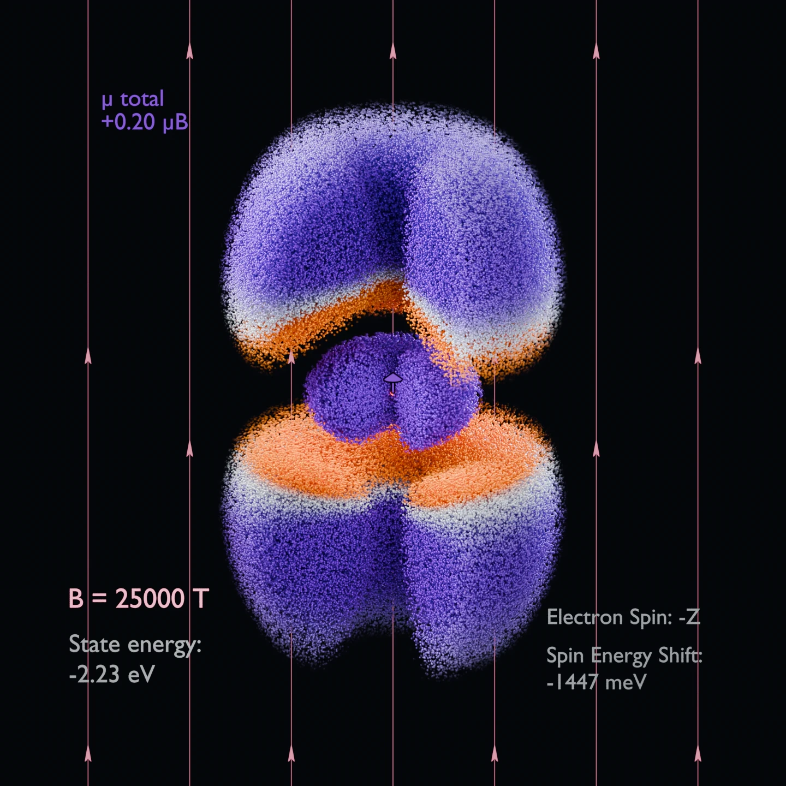

Hydrogen · A companion to the video
The Zeeman effect
in the current
A magnetic field separates the energies of two spin states. The circulating probability current provides us with another way to look at the energy split.
Watch the two states together
The dot visualize the mathematics of probability current, calculated from the electron’s wavefunction. The standard interpretation of Quantum Mechanics does not allow the flow to be measured. Indeed, QM would question its physical existence. Be that as it may, I find it fun to visualize. Moreover, in the last section I discuss an argument by David Hestenes for taking that flow more seriously.
01 / The standard account
A magnetic field splits the Energy levels
An atom placed in a magnetic field can acquire several distinct energies where it previously had one. Transitions between the shifted levels can then produce several spectral lines. This is the Zeeman effect. The number and spacing of those lines depend on both levels involved and on which transitions are allowed. [1]
The standard explanation starts with magnetic moments. A magnetic moment \(\boldsymbol\mu\) in a field \(\mathbf B\) has interaction energy
A moment pointing along the field has lower interaction energy than one pointing against it. For an electron, the spin magnetic moment points opposite to the spin (negative charge). With the field upward, spin up therefore gives the higher of the two spin energies.
We will concentrate on hydrogen’s 1s state. Its ordinary orbital angular momentum is zero, so the linear splitting of this pair comes from spin. In the Pauli model used here,
Here \(\mu_B\) is the Bohr magneton (a constant). The two levels are separated by \(2\mu_BB\). The common part includes the spatial energy of the orbital and its response to the field. [2]
02 / Before the field
The cloud is stationary. Its current circulates.
In the earlier orbital visualizations, I followed both the probability density and the probability current. The density \(\rho\) tells us how likely a position measurement is to find the electron in a small region. The vector field \(\mathbf j\) describes probability flux. Dividing one by the other defines the flow shown by the dots:
For an electron, the current inherited from Dirac theory contains a spin contribution. Even the stationary 1s state can carry this current. Reversing the spin reverses the circulation while leaving the zero field density and speed unchanged. The ordinary orbital quantum number is still \(\ell=0\), so all the angular momentum comes from the spin. [3]
The circulating current does not reshape the cloud. Probability flows around the axis without building up anywhere. In the continuity equation, a stationary density requires the current’s divergence to vanish; it does not require the current itself to vanish.


03 / Turning on B
The Magnetic field adds to one circulation and opposes the other
Keep the field pointing up throughout. We shall be comparing the effect on spin UP versus spin DOWN.
Observe the two spin states of hydrogen ground state 1s as we turn on the magnetic field.
Spin up · \(+\mu_BB\)
Spin down · \(-\mu_BB\)
For a weak field, with the both clouds have the same shape (same probability distribution), but their velocities change.
Here \(v_0\) is the local speed before the field, \(R\) is distance from the field axis, and \(e\) is the positive magnitude of the electron’s charge.
Beyond the 1s orbital
Higher orbitals reveal more layers of circulation. Each pair shows spin up followed by spin down. The field points up, and both images use the same field strength and camera scale.
The labels identify the starting orbitals; the pictures show their deformed clouds at the stated fields. Orange and violet regions carry opposite directions of circulation, while silver marks slow flow.
3s · Spin up

3s · Spin down

4d, \(m_\ell=0\) · Spin up

4d, \(m_\ell=0\) · Spin down

3p, \(m_\ell=-1\) · Spin up

3p, \(m_\ell=-1\) · Spin down

04 / Reading the motion
The familiar intuition from classical physics
There is a classical intuition behind the change in speed. An electron moving counterclockwise around an upward field has an inward magnetic Lorentz force, toward the field axis. For clockwise motion, that contribution points outward. That is "why" magnetic field changes the circulation.
A static magnetic force does no work: it is perpendicular to the velocity. But during the turn on of the magnetic field there is (by induction) a circulating electric field, which may be interpreted as the "driver" of the changing circulation speeds.
But surely this is just a fun coincidence and not something to be made consistent with serious quantum physics?
05 / An interpretation of the energy
Hestenes: taking the circulation seriously
So far, the motion has been a way to display a calculated current. David Hestenes proposed giving that current a more direct physical meaning. In his 1979 paper Spin and uncertainty in the interpretation of quantum mechanics, he examined the Pauli current as a description of electron motion and related the magnetic energy change to kinetic energy. Section II, especially equations (2.7) through (2.10), makes the comparison with the conventional magnetic interaction term explicit. [4]
We can test this idea mathematically for the pair shown here. Define the kinetic energy associated with the complete flow:
For these two stationary spin states, the difference is
The difference in this flow kinetic energy equals the entire spin Zeeman splitting. The connection between faster circulation and higher energy is quantitative.
The standard calculation assigns the split to magnetic interaction energy. With the full Pauli current taken as a flow of electron motion, the same split can be read as a kinetic energy difference between the two circulations.
Hestenes’s viewpoint, on the other hand, gives the circulation interpretation a concrete physical motivation: it accounts for the magnetic energy change through motion.
The calculation for our 1s pair
Write the common real spatial amplitude as \(f_B(R,z)\), normalized so that \(\int f_B^2\,d^3x=1\), with \(\rho=f_B^2\). In the symmetric gauge, \(\mathbf A=\tfrac12\mathbf B\times\mathbf r\), the two azimuthal velocities are
The squared velocities differ by \(4uw\). Substitution into the flow energy therefore gives
Using the cylindrical volume element \(d^3x=R\,dR\,d\phi\,dz\), integration by parts gives \(\int Rf_B\partial_Rf_B\,d^3x=-1\). The boundary term vanishes for this regular, localized state. Hence \(\Delta K_{\rm flow}=e\hbar B/m_e=2\mu_BB\).
The flow term alone is not the entire energy. For this particular pair the remaining terms can be written as
Both additional terms are shared by the spins. They cancel when we subtract the energies. This derivation uses the stationary flow at a fixed field, without the illustrative transport used while the movie changes the field.
Agreement with the energy splitting does not establish that an individual electron follows a displayed curve. It does show why these curves deserve attention beyond their visual appeal.
About these visualizations
The calculation uses a nonrelativistic electron with a fixed nucleus, a uniform applied magnetic field and spin factor \(g=2\). It includes the common magnetic compression. Proton spin, hyperfine coupling, relativistic corrections and the small anomalous correction to the electron’s magnetic moment are omitted. The simple two level description therefore concerns this electronic model.
“Weak field” here means weak enough to leave the 1s spatial density nearly unchanged. The 100kT endpoint is used to make the changes visible and is outside that small deformation limit. The clouds show an 80% probability region with a viewing cutaway. Their density has no hard physical edge. All films here retain the same time scaling for both spins; the displayed seconds are animation time.
The probability current used in the films
For charge \(-e\), with \(e>0\), the full Pauli current is
Here \(\rho=\Psi^\dagger\Psi\), and \(\boldsymbol\sigma\) denotes the Pauli matrices. The three terms contain the phase contribution, the vector potential contribution and the spin contribution. Their sum is gauge invariant. The last term is the magnetization current obtained in the nonrelativistic limit of the Dirac current. [3]
References
- NIST, Atomic Spectroscopy: Zeeman Effect. Magnetic sublevels and the usual expression for their energy shifts.
- Richard Fitzpatrick, Zeeman Effect. Orbital and spin magnetic moments, including the 1s energy gap.
- Marek Nowakowski, The Quantum Mechanical Current of the Pauli Equation (1998 preprint). The spin contribution and its derivation from Dirac theory, especially equations (4) and (9).
- David Hestenes, Spin and uncertainty in the interpretation of quantum mechanics, American Journal of Physics 47, 399–415 (1979). Section II, equations (2.7) through (2.10). doi:10.1119/1.11806.
Comments and questions
Share a thought about this visualization.